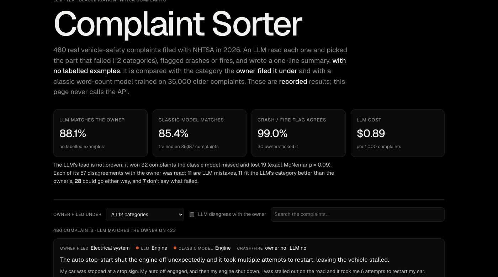

LLM · Text classification · 2026-10
Complaint Sorter
An LLM sorts real vehicle-safety complaints into the part that failed, with no labelled examples, and goes head to head with a classic classifier trained on 35,000 complaints.

Planned with the CFPB's consumer-complaint database, but the CFPB no longer publishes complaint text (checked 2026-10-01), so this uses NHTSA's vehicle complaints instead. The demo shows recorded results; it never calls the API.
01 — The problem
Agencies and companies get thousands of complaints in free text, and someone has to route each one to the right team. Car owners file safety complaints with NHTSA in their own words and pick the part that failed, which gives a ready-made answer key. Can an LLM read a complaint and pick the right part with no training examples at all? Is that worth more than a classic model trained on tens of thousands of labelled complaints?
02 — What I built
A Python pipeline over 81,324 real NHTSA complaints (10 makes, model years 2019–2024):
- 12 categories: the components owners file under most, from engine and power train to air bags and lights.
- An LLM sorter: gpt-5.4-mini with structured output returns a category, a crash-or-fire flag and a one-line summary for each complaint.
- A classic baseline: TF-IDF word counts and logistic regression, trained on 35,187 complaints from before 2026.
- A fair test: 480 complaints filed in 2026, 40 per category, scored once.
- A review of every complaint where the LLM disagreed with the owner.
03 — How it was built
- 01
Find data that still has the words
The plan was the CFPB's consumer-complaint database. But its API now rejects the narrative field, and the 349 MB bulk file has no text column: the complaint text is gone. NHTSA's vehicle complaints are the closest public substitute. They are real consumer complaints in the filer's own words, each with the component the filer picked and crash / fire tick boxes. 114,912 records downloaded from the free API in four minutes.
- 02
Set up a fair contest
81,324 unique complaints, of which 42,526 name exactly one of the 12 most common components. The test is 480 complaints filed in 2026, 40 per component, so a big category can't hide a weak one. Everything the classic model learns from was filed before 2026. Sixty complaints from 2025 are set aside as a dev set for writing the prompt, so the test is never used to tune anything.
- 03
Build the baseline it has to beat
TF-IDF turns each complaint into word and two-word counts. Logistic regression learns which words point to which part. Trained on 35,187 labelled complaints in 28 seconds, it matches the owner's category on 85.4% of the test set. That is the bar.
- 04
Write the prompt on dev, run test once
The LLM gets the 12 categories, each with a one-line description, and a JSON schema it must fill: category, crash_or_fire, summary. The first prompt got 53 of the 60 dev complaints right. Two of the misses came from my own descriptions, so I checked how 2019–2025 complaints are filed: 66% of sunroof complaints are filed under visibility, and 90% of adaptive-cruise complaints under collision avoidance. Fixing those two lines gave 54 of 60. Then the 480 test complaints ran once: $0.43, 1.3 seconds median each.
"VISIBILITY": "windshield, sunroof and other glass, wipers and washers, mirrors, defroster, anything blocking the driver's view", "FORWARD COLLISION AVOIDANCE": "automatic emergency braking, collision warnings, adaptive cruise and other driver-assistance (ADAS) features, including braking for no reason", - 05
Score it, then read every disagreement
The LLM matched the owner on 88.1% vs 85.4% for the baseline. On the same complaints, though, it won 32 and lost 19, and an exact McNemar test gives p = 0.09: the lead could be chance. Each of the LLM's 57 disagreements with the owner was then read and given a verdict with a one-line reason. 11 are LLM mistakes. In 11 the text fits the LLM's category better than the owner's. 28 could go either way (a part spanning two categories, two problems in one complaint). 7 don't say what failed at all.
- 06
Publish without republishing people
Complaint text is NHTSA's public record, but a few complaints include a phone number or start with the filer's town and ZIP. The repo stores no complaint text: the scripts download it again. The demo strips phone numbers, e-mails and town/ZIP prefixes, and
check.pyfails if any come back. It also checks that the sets are fair and that every score recomputes.
04 — Results
| 480 test complaints, 2026 | Matches owner | Macro-F1 | Labelled examples |
|---|---|---|---|
| LLM (zero-shot) | 88.1% | 0.884 | 0 |
| TF-IDF + logistic regression | 85.4% | 0.858 | 35,187 |
- Clear LLM errors were 11 of 480 (2.3%) once the disagreements were read. Many "misses" are complaints that honestly fit two categories.
- Use them together: they agree on 87.9% of complaints and are then right 92.7% of the time. The other 12% could go to a person.
- Crash or fire: the LLM matched the owner's tick boxes on 475 of 480.
- Weakest category: electrical system (F1 0.72). The LLM over-uses it for anything with a warning light or software. Strongest: exterior lighting (0.97) and air bags (0.96).
- Cost: $0.89 per 1,000 complaints.
05 — What I'd do next
- Few-shot prompts (a handful of labelled examples per category) to see whether the lead becomes significant.
- Handle complaints that name several parts, about a third of all complaints.
- Grade the summaries with a rubric instead of leaving them to the reader.